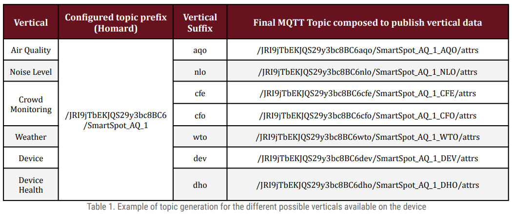
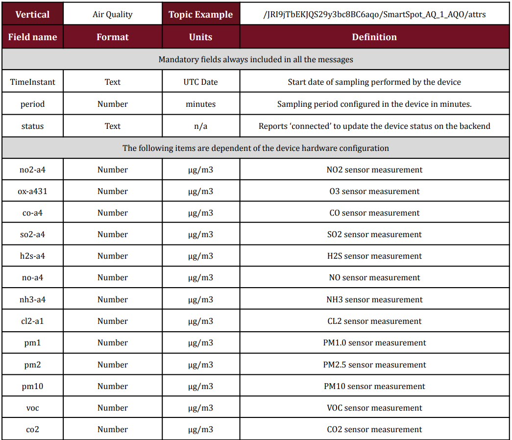

MQTT
Introduction
MQTT is one of the most wide IoT protocols used both due to its scalable capabilities and the number of platforms for Smart Cities accepting this protocol. For that reason, MQTT has been introduced in the Smart Spot to be a protocol to report values to 3rd party platforms. Nowadays, it can be used only to report values, while managing it will be carried out using the original Smart Spot protocol, which is LwM2M. The management can be used both from the platform provided by Libelium so called Homard.
This version of MQTT also includes significant security and reliability improvements compared to earlier versions. For example, authentication and authorization mechanisms were added to enable safer and more controlled communication between devices. Session management was also improved, and a "last will and testament" mechanism was added to ensure that devices disconnect properly in case of a network failure.
Overall, MQTT v3.1.1 is considered a mature and stable version of the MQTT protocol and is widely used in a variety of IoT applications, such as environmental monitoring, vehicle telemetry, asset tracking, and more.
Features of MQTT
-
Supported Security MQTT v3.1.1 supports the two main security mechanisms to ensure secure communication between devices. These include:
-
User and password-based authentication: MQTT devices can be authenticated using user and password credentials stored on the MQTT server.
-
1.2 Digital certificates: MQTT devices can be authenticated using digital certificates, which provides greater security and mutual authentication between devices. Both of them can be configured using the remote device management platform Homard provided by Libelium.
-
-
MQTT Ports
MQTT uses by default two different ports for communication:
-
TCP port 1883: This is the default port used for unencrypted connection. MQTT clients connect to the MQTT server using this port. The communication between the client and the server is performed without encryption, meaning that the exchanged data is not protected.
-
TCP port 8883: This is the port used for encrypted connection. MQTT clients can connect to the MQTT server using this port and establish a secure connection over TLS (Transport Layer Security). TLS provides an additional layer of security to MQTT communication, protecting the exchanged data between the client and the server
It is important to note that default ports may vary depending on the MQTT provider or the MQTT server configuration. Therefore, the MQTT server documentation should be consulted to confirm the ports used in MQTT communication and ensure that clients are properly configured to connect to the server.
-
-
Configuration
The vertical data concept involves grouping and organising the data reported by the device into different verticals depending on the transmitted data set. The grouping of this data aligns with the definition of the official Data Models of the FIWARE platform described on the website https://smartdatamodels.org/. Given the versatility of the Smart Spot to be configurable at the hardware level during the order with different types of sensors, not all data verticals have to be active on the device. The device transmits data using the necessary verticals depending on the hardware configuration of the device. Additionally, it is possible to enable or disable specific verticals separately through the Homard device remote platform as indicated in the next section.
The definition of a vertical at MQTT integration level is mainly composed of two elements:
- Topic: The topic for publishing each data set of the vertical will be composed based on a default prefix or a topic prefix specified by the client through the Homard device remote platform. The topic prefix must have the following format
/{base_apikey}/{device_id}<br>where 'base_apikey' is usually an identifying key for a set of devices and 'device_id' is a specific name for the device. If a topic prefix is not configured, the device will use a default one.
This topic prefix will be internally modified by the SmartSpot depending on the vertical. Specifically, the SmartSpot will add both the ‘/attrs’ postfix corresponding to the one required by the FIWARE IoT Agents to receive data and the 'lower_vertical_suffix' and 'upper_vertical_suffix' fields within the topic prefix to separate the data into different topics, one for each vertical, resulting in the final topic being composed in the following way:
/{base_apikey}{lower_vertical_suffix}/{device_id}_{upper_vertical_suffix}/attrs<br>The following table illustrates an example of the prefix formation according to the publication vertical.

- Message: The data published through JSON-encoded text messages on each of the specified topics contain at least the data from the different sensors included in your Smart Spot device for each vertical, and may also include extra information regarding how the device is configured. This extra information is provided as it may be useful to the user and may enable device configuration via MQTT protocol in the future, although this feature is not currently implemented. The following table illustrate the information that can be included in each vertical depending on your device's configuration.

The example message will be:
```{ "TimeInstant": "2023-03-20T13:50:00Z", "period": 5, "status": "connected", "no2-a4": 0.640869140625, "ox-a431": 28.586013793945312, "co-a4": 91.760452270507812, "so2-a4": 0.927800178527832, "pm10": 49.334125518798828, "pm2": 15.33404541015625, "pm1": 2.1444158554077148 } ```It is important to note that if a sensor is not connected or not working properly, the field is still included in the transmitted message, but its value is set to 'null'. The reasons for carrying out this procedure are mainly to:
-
Help identify device malfunctions for maintenance tasks.
-
Prevent the introduction of '0' or repetitive non-real values that can cause confusion when data persists in databases or is represented in graphs.